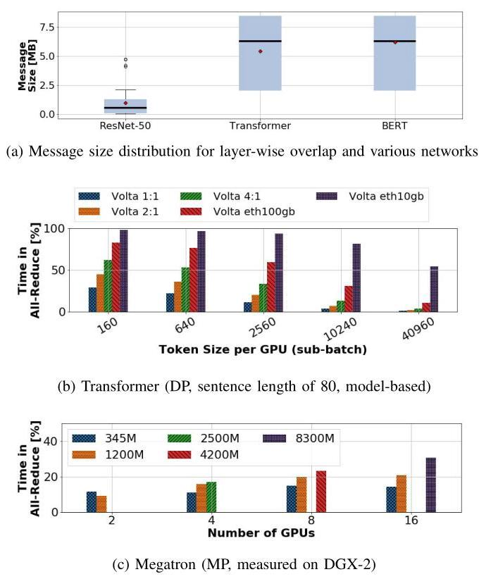
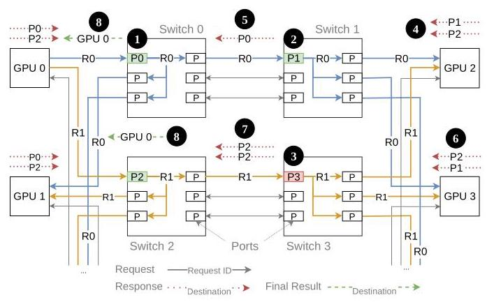
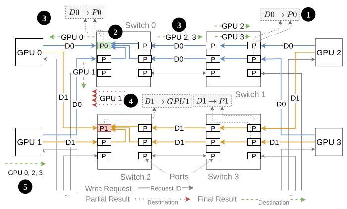
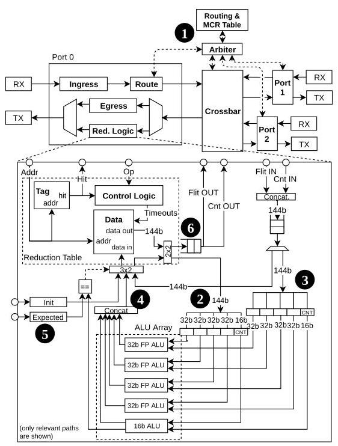
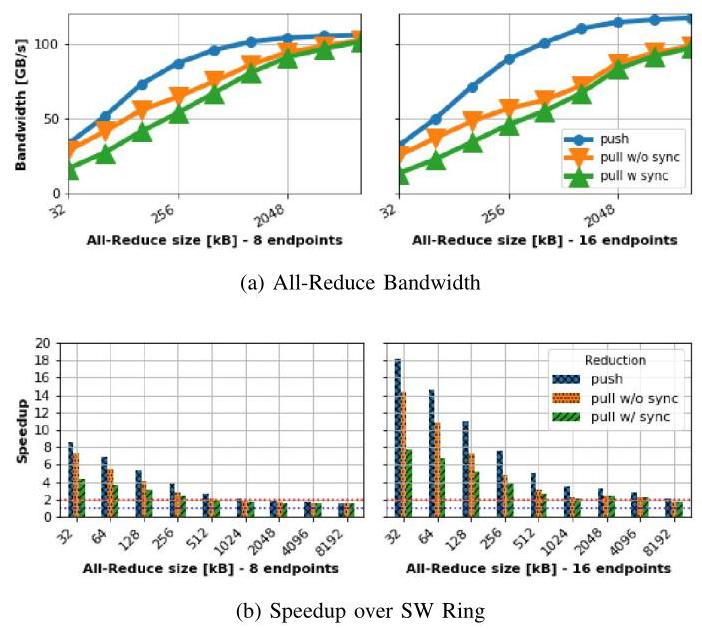
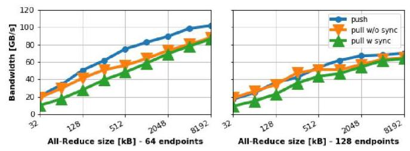
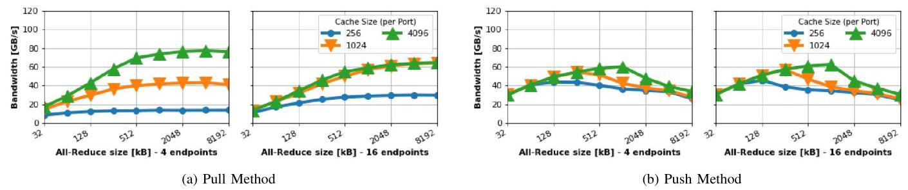
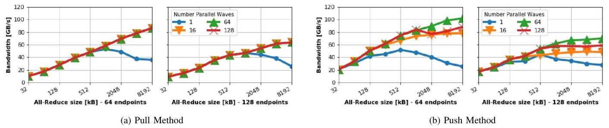
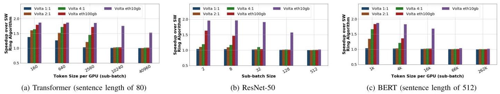

An In-Network Architecture for Accelerating Shared-Memory Multiprocessor Collectives 深度解读
作者：Benjamin Klenk、Nan Jiang、Greg Thorson、Larry Dennison（NVIDIA）
会议/年份：ISCA 2020（2020 ACM/IEEE 47th Annual International Symposium on Computer Architecture）
一句话总结：本文通过网络交换机与 GPU 端点协同设计，在共享内存互连中用 Multicast、Pull/Push in-network reduction 和基于 wave 的注入控制加速 All-Reduce，相比软件 ring 在小消息上最高加速 18×、大消息上趋近 2×，并使 Transformer 训练最高加速 1.4×。
一、问题定义（Problem）
背景与切入点
在 data-parallel DNN 训练中，每张 GPU 计算一份局部梯度，但每轮更新前必须把所有 GPU 的梯度按元素求和并把结果发回所有参与者，这就是 All-Reduce。它既有“归约”计算，又有“向所有节点分发结果”的通信，无法像普通算子那样完全局部化。随着 tensor core 等专用计算单元使 GPU 算力增长快于互连带宽，All-Reduce 在 step time 中所占比例反而会上升：论文的模型显示，在 16-GPU DGX-2 上，Transformer 的 All-Reduce 已可占 Volta 训练时间约 30%，对计算能力提升 4×、带宽不变的未来 GPU 可达 42%；Megatron 的 8.3B 模型实测也约有 30% step time 花在 All-Reduce 上。
传统 NCCL ring 是 bandwidth-optimal 的软件算法，但每个处理器仍需在 Reduce-Scatter 和 All-Gather 两阶段合计收发约两倍消息量，所以有效带宽上限只有物理网络带宽的一半；它还需要随节点数线性增长的同步步骤、GPU kernel 资源和全系统 memory fence。树算法把步数从 \(O(p)\) 降到 \(O(\log p)\)，却没有消除端点搬运、同步和重复传输。
把归约放入交换机并非本文首创，因此这是一篇非 First 类型工作。它的真正切入点是：BlueGene、SHArP 和早期 programmable-switch 方案面向 CPU 发起、message-passing 和显式资源 reservation；而 NVLink/NVSwitch 一类 accelerator-centric shared-memory fabric 承载的是海量、细粒度、乱序的 load/store/atomic 请求。数百万 GPU 线程和多个简单 DMA engine 无法保证消息注入次序，逐消息预约资源的协议开销也会压倒小包本身，因此现有机制不能直接移植。

Fig. 1 把动机落到应用层：layer-wise overlap 产生的大量消息远小于一次性归约，例如 ResNet-50 平均约 1 MB，而 Transformer 平均约 5 MB、约一半小于 6 MB；因此决定训练能否有效重叠的不是只有峰值带宽，还有小消息延迟与启动/同步开销。
动机评估：动机很 solid。作者用 DGX-2 实测、逐层性能模型和消息大小分布共同证明瓶颈真实存在，并指出计算/带宽失衡会使问题加剧。弱点在于应用论证主要围绕 2020 年 NVIDIA GPU、NCCL ring 与少数 DNN，跨厂商 shared-memory fabric 的普适性更多是架构推断，而不是多平台实证。
核心 Insight：在共享虚拟地址空间里，collective 的“参与者集合”和“操作类型”可以编码到地址映射与 opcode 中，让普通 load/store 自然触发网络内复制或归约；再用 opportunistic table allocation 和 wave-based injection limiting 管住乱序请求，而不依赖全消息 reservation 或固定注入顺序。这个 insight 把“共享内存小包、乱序、海量并发”的限制转化成了交换机按地址识别操作、端点按 wave 控制在途工作集的方案。
二、相关工作（Related Work）
论文的相关工作可以按“归约发生在哪里、采用什么通信语义”分为四类。
第一类是 软件 collective，包括 NCCL/Baidu ring、double-binary-tree、recursive doubling 以及面向大规模系统的分层或 multi-leader 算法。它们无需修改网络硬件，ring 还能达到链路带宽最优，但端点必须承担归约计算、重复搬运和同步；即使树降低了 step 数，也没有改变 All-Reduce 两阶段导致的约 2× 数据流量。
第二类是 专用 HPC 网络 collective，如 BlueGene、PERCS、Anton2 和 Mellanox SHArP。它们证明硬件归约有效，Anton2 的 opportunistic reservation 也与本文 Pull 有相似性；然而这些系统以 CPU/message passing 为中心，依赖 queue pair、消息边界和显式资源预约，不适合共享内存 fabric 中细粒度、乱序且数量巨大的 memory operation。
第三类是 programmable switch 或附接式 reduction accelerator。Sapio 等把归约数据路径放入可编程交换机，Li 等给每个交换机增加集中式 accelerator，Parameter Hub 则把归约逻辑附接到交换机。它们面向 Ethernet/rack-scale 训练，集中式数据路径在本文所设想的高 radix、高带宽交换芯片中容易成为吞吐或布线瓶颈；本文因此采用每端口 reduction table 与 ALU，使数据路径分布化并维持 line rate。
第四类是 in-network cache，如 IncBricks 和 NetCache。它们同样利用地址/键在网络内聚合状态，但目标主要是缓存与负载均衡，没有把 cache-like table 与共享内存 All-Reduce 的计数、归约、multicast 完成语义结合起来。
本文与 SHArP 并非完全互斥：作者设想在多网络域中分阶段、流水化地执行归约。其新意不是“网络里能算”，而是为 accelerator-centric shared memory 给出无需逐消息 reservation 的完整 switch/endpoint co-design。
三、技术挑战（Challenges）
- 乱序且多源的细粒度内存流量：GPU 的百万线程和多个 DMA engine 不能保证同一 collective 的元素按固定顺序到达，协议既不能依赖消息级 source，也不能把复杂元数据塞进每个小包。
- 有限 reduction table 与死锁风险：交换机 SRAM 很小，而大消息会产生远多于 table entry 的在途元素。Pull 可以 backpressure，但 Push 若在 table 满时阻塞，可能形成协议死锁；直接溢出又会制造大量 partial result 流量。
- 完成检测与正确同步：交换机必须知道一个地址已经收到多少 operand 才能发出 final result；Pull 还必须保证所有 GPU 已写完源数据，Push 则必须在 eviction 后继续追踪跨多个 partial result 的总贡献数。
- line-rate 数据路径：归约逻辑要在每周期处理一个 flit，不能成为高带宽、高 radix 交换机的新瓶颈；数据对齐、计数与 ALU 并行度都受硬件时序约束。
- multicast 的带宽、流控和无死锁性：All-Reduce 的结果需发回所有 GPU，复制会放大交换机内部流量并造成拥塞；同时必须与 ordinary unicast 共存，避免 wormhole/协议死锁和 QoS 崩溃。
- 规模化时的拥塞与资源利用不均：Pull 主要依赖请求 GPU 的 first-hop port table，Push 则可利用全网 table，但对到达顺序和 capacity miss 更敏感；端点必须让“在途 wave 大小”与分散的网络容量匹配。
四、解决方案（Solution）
整体思路
论文先在全局虚拟地址空间中增加 Multicast Region（MCR），由 fabric manager 把参与 GPU 集合写入各交换机的 MCR table；访问 MCR 的普通 store 会在沿途被树状复制。随后交换机每端口加入 reduction table、计数器和 ALU array，并提供 Pull 与 Push 两种协议。最后，GPU core 或 DMA engine 通过 wave controller 限制同时在途的元素，使 table 容量被高效使用且不过载网络。
贯穿示例：四张 GPU 汇总两个梯度元素
设 GPU0–GPU3 各自算出梯度向量中的两个元素 \(D_0,D_1\)，目标是求和后让四张 GPU 都得到结果。初始化时，软件把四张 GPU 的目标缓冲区注册为一个 MCR；因此网络只需看到 MCR 地址，就知道包要复制到哪些端点，无需在每个包头携带四个 destination。
在 Pull 中，可让 GPU0 对 \(D_0\) 发出“带 SUM operator 的 load”。请求沿 multicast tree 到达其余 GPU；返回值在沿途交换机有空 table entry 时被先局部相加，最终所有响应必定汇入 GPU0 first-hop switch 的 entry，计数达到预期后把和返回 GPU0。四张 GPU 分摊元素，每张 Pull \(m/p\) 个结果，最后用 MCR multicast 做 All-Gather。它像“指定一位同学去每桌收成绩，路上的组长顺手先小计”：交换机中途没空时可以跳过小计，但第一跳必须留座位。代价是发请求前需要 barrier，确保别人不会在被读取后才更新 \(D_0\)。

Fig. 3 的关键不是所有交换机都必须成功预约，而是 intermediate table 可 opportunistically bypass，只有 first-hop allocation 是强制的；这避免了跨交换机的复杂 reservation protocol，同时仍保证最终结果有汇合点。
在 Push 中，四张 GPU 直接把自己的 \(D_0,D_1\) 作为 reduction write 发出。地址 hash 决定 home port，例如 \(D_0\rightarrow P0\)、\(D_1\rightarrow P1\)；同地址包自然汇到同一 fully-associative table entry。计数到 4 时，交换机把最终和 multicast 给全部 GPU。它像“每桌主动把成绩投进按科目编号的汇总箱”，无需开始前 barrier，但箱子满时不能阻塞，否则不同地址的等待关系可能死锁。被 LRU/timeout 驱逐的 partial result 因而送回 home GPU，由端点继续相加并在贡献计数完整后 multicast 最终值。

Fig. 4 展示了 Push 的性能来源与复杂性来源是同一件事：所有 GPU 可立即注入，且能用全网 table；但 eviction、partial count、timeout 和 home-GPU completion 都需要额外状态机。
关键技术点
1. 地址化 Multicast。 MCR 是已有 allocation 的网络级映射，每个交换机只为一个 region 保存一条“地址范围→target IDs”记录。包到达后查 MCR table、复制并沿各自 unicast-conforming path 前进；允许部分 output port 先发送、其余端口后续仲裁，提升 crossbar 利用率。把 group 信息放在地址映射中，避免每个 128 B payload 包反复携带目的集合。
2. Pull 的 guaranteed-first-hop + opportunistic-intermediate allocation。 first-hop table 满时请求被 stall，响应与请求使用不同 VC，确保已有归约能完成并释放资源；中间 table 满则 bypass。这个设计直接解决 table 有限与无全局 reservation 的矛盾，但 barrier、read request 和 write acknowledgment 会损失小消息和峰值带宽。
3. Push 的 address-hashed home port + eviction recovery。 所有 operand write 按地址到同一 table，结果本身完成同步。table miss 且无空位时用 LRU/timeout 驱逐，论文选择把 partial result 发给 home GPU，降低因反复 multicast 引发的网络放大。每个包携带 reduction count，端点将 partial result 原子式累加，累计到全部参与者后再广播。
4. 每端口 line-rate reduction datapath。 routing/MCR lookup 决定请求使用哪个 port table；tag hit 后，table operand 与入站 flit 同时进入 ALU array，结果和 count 写回。对 128 B payload、4 B 元素，要求首地址按 128 B 对齐且元素连续；当 count 达到预设阈值，结果直接送到输出并复位 entry。

Fig. 5 说明方案不是在交换机旁挂一个串行 accelerator，而是把 lookup、存储和多路 32-bit floating-point ALU 放进端口数据路径；目标是一周期处理一个 flit，从结构上避免集中式归约单元成为瓶颈。
5. Wave synchronization / injection limiting。 若 collective 有 \(m\) 个元素而网络 table 总容量为 \(C\)，端点把数据切成 wave，并只允许有限个 wave 并发。DMA 的 wave controller 为请求分配 counter 和 credits；只有当前 wave 收到足够响应时才归还 credit、推进后续 wave。多个 counter 让 wave 流水化，以隐藏同步延迟。这既抑制 Push eviction，也避免 Pull backpressure 干扰 ordinary traffic。
6. 流控、可靠性与数值语义。 请求/响应分 VC，采用 deterministic routing、cut-through 的整包存储保证，以及与 unicast 一致的 multicast path 来避免死锁。方案假设底层有 link-level retransmission 和 sequence number；更大系统还需端到端重传、多路径和 congestion control。浮点 operand 的到达次序仍不确定，因此默认结果不具 bitwise determinism；要变成 deterministic reduction 需付出更多存储。
与已有方案的对比
相较软件 ring，本文在归约树中消除了 Reduce-Scatter/All-Gather 的重复搬运，理论上大消息带宽可接近 2×，小消息还省掉 kernel/fence 同步。相较 SHArP 等 message-passing 方案，它以 load/store、VAS 和地址映射承载语义，不需要逐消息 queue-pair/reservation，更贴合 accelerator-centric shared memory。
Pull 的 GPU/switch 控制更简单、table 不足时行为自然，但需要前置 barrier，且 first-hop table 利用不均；Push 无需 barrier、性能和规模性更好，也能利用全网 table，却引入 eviction、timeout、计数与 home-GPU partial reduction。作者估算 16 nm 下 18 KB SRAM 约 \(0.05\,\mathrm{mm}^2\)，相对 106 \(\mathrm{mm}^2\) NVSwitch die 连同逻辑低于 1% 面积；不过这只是 SRAM/面积类比，不是布局布线、频率与功耗完成后的芯片实现。
五、实验评估（Experiments）
实验设定
- 模拟器：bksim2（BookSim 后继），按单个 load/store 粒度建模；in-network traffic generator 模拟 DMA-initiated reduction。
- 系统：16-GPU DGX-2 式双组 Fat-Tree；以及 128 GPU、144 switches 的两级 Fat-Tree（16 个 leaf group，每组 8 GPU/6 leaf switches，第二级 48 switches）。GPU 均有 6 ports，switch 有 16 ports。
- 网络参数：每端口 25 GB/s、switch latency 150 ns、uniform-random throughput 超过 95%；request/response 使用 2 个 VC；最大 packet 144 B，其中 payload 128 B、header 16 B；GPU memory latency 为 180 cycles，再随机增加 \([0,180)\) cycles。
- Baseline：NCCL 使用的 ring All-Reduce，以 data–fence–flag 语义传递大块数据；作者称其在所模拟规模上是测得带宽最高的软件算法。
- 指标与 workload：All-Reduce bandwidth、相对 ring speedup、packet latency、table size/wave 数量敏感性，以及 ResNet-50、Transformer、BERT 的 data-parallel 训练模型和 Megatron model parallelism。
主要实验与结论
16 GPU 带宽与消息大小。 理论最大 payload bandwidth 为 120 GB/s。Push 只需 256 B/port table，Pull 使用 4 KB/port；大消息时 Push 接近上限，Pull 因 request/ack 竞争略低。相对 ring，小消息最高达到 18×，随后随消息增大收敛到约 2×，与“软件需搬两遍、网络内归约搬一遍”的带宽分析一致。

Fig. 7 同时说明两个 regime：左侧小消息主要受同步/启动延迟支配，因而可远超 2×；右侧大消息转为带宽受限，Push/Pull 的优势靠近理论 2×。Pull 的显式同步尤其损害小消息。
64/128 GPU 规模性。 64 GPU Fat-Tree 仍可达到约 100 GB/s；128 GPU 时峰值降到约 70 GB/s。作者把异常归因于网络接近满载而没有 congestion control 导致 tree saturation。论文声称大规模小消息相对 ring 可高出多个数量级，但没有展示该对比图，也承认实际软件通常会组合 ring/tree，所以这一“数量级”结论不能等同于对最强大规模软件 baseline 的公平比较。

Fig. 8 是方案“能扩到 128 GPU”的主要证据，但也暴露了规模化瓶颈：协议功能正确并不等于互连在缺少 congestion control 时能保持 16/64 GPU 的峰值效率。
table size 与 wave。 不做 wave synchronization 时，Push 对 table 容量明显比 Pull 敏感，因为 capacity miss 会把 partial result 送回 GPU、额外消耗带宽；Pull 的 stall 则形成自调节。加入 wave 后，Fat-Tree 的 Push 用 256 B/port、64 个 8 KB wave（在途 512 KB，接近全网 590 KB table）即可得到高带宽；DGX-2 用 16 个 8 KB wave（128 KB，在途数据约为 48 KB table 的 2.6×）也能高效流水。Pull 需要更大 per-port table，但 4 个 wave 即达峰值。


Little's Law 给出的 DGX-2 容量预测与模拟相符：Pull 约 1.4 KB/port，Push 约 270 B/port。对 16 GPU、8 MB All-Reduce，wave synchronization 还把平均 packet latency 降低约 90%，表明它不仅提高 collective throughput，也改善与其他流量共存时的 QoS。
DNN 训练影响。 在 DGX-2 模型中，Transformer 在 NVLink 系统最高约 1.4×，Ethernet 配置约 1.8×；ResNet-50 因模型仅约 50 MB、通信占比低，收益较小。计算/带宽比越高、每 GPU sub-batch 越小，收益越大。对 Megatron，8 MB 以上 All-Reduce 约获 2× 通信加速，而通信占 step time 最高 30%，由 Amdahl 式推算得到当前 Volta 约 15% 的端到端提升。

Fig. 11 显示端到端收益远小于 collective microbenchmark 的 18×：只有原本落在 All-Reduce 上的时间能被消除，而且不同模型、sub-batch 和互连带宽决定了可加速比例。
结论支撑性分析
实验较充分地支撑了三项核心主张：网络内归约大消息趋近 2×、小消息显著受益，以及 wave 能用较小 table 保持吞吐。Little's Law 预测与 sensitivity sweep 相互印证，也让参数选择不只是经验调优。
证据边界同样清楚：所有互连结果来自模拟，没有 RTL/FPGA/silicon 原型；训练结论多由 performance model 外推，Megatron 只用真实机器测量“有/无 All-Reduce”占比，再套用模拟通信加速；128 GPU 缺少 congestion control，且 >16 GPU 时只与简单 ring 定性比较；面积与功耗没有综合实现或实测。因而论文有力证明了“架构方向可行且有潜力”，尚未证明产品级实现能在真实混合流量、故障恢复和公平 QoS 下保持这些数字。
六、附加洞察（Side Findings）
结论 1：更大的 model-parallel 模型不一定摊薄通信，反而可能让 All-Reduce 占比上升。
- 出处：Section II-B3，Fig. 1(c)。
- 推理链条：作者在真实 DGX-2 上比较 345M–8.3B 参数的 Megatron → 观察到模型越大，GEMM 计算效率提升得越明显，而通信带宽没有同步提升 → 因此 All-Reduce 占 step time 从较小模型继续上升，8.3B/16 GPU 约达 30%。这反驳了“大模型计算更多，所以通信自然被摊薄”的直觉，但样本只覆盖一个 model-parallel 实现。
结论 2：对软件 ring，layer-wise overlap 并不天然优于 one-shot。
- 出处：Section II-B2 与 Section VI-E。
- 推理链条：per-layer gradient 使消息从总计 50/420 MB 切成平均约 1/5 MB → 每次 kernel launch、fence 和小消息 latency 的固定成本上升，通信 kernel 还与计算争用 core/memory system → 模型显示 NCCL ring 只有 Transformer token size 大于 640（Volta）或 5120（Volta 4:1）时 overlap 才有益；而低延迟 in-network reduction 在 Transformer 的全部数据点上都使 overlap 胜过 one-shot。
结论 3：wave synchronization 的价值不仅是防止 table overflow，还能显著改善网络 QoS。
- 出处：Section VI-D，Fig. 10。
- 推理链条：无限制注入会让 Pull 产生深 backpressure、让 Push 反复 eviction → 两者都增加网络排队 → 将在途地址限制成多个流水 wave 后，16-GPU、8 MB All-Reduce 的平均 packet latency 比无 wave 时下降约 90% → 因而 wave controller 也是 collective 与普通流量共存的关键机制。论文只报告平均 latency，没有给 tail latency 或真实混合 workload，QoS 结论仍不完整。
结论 4：Push 的 microbenchmark 优势在应用层被明显压缩，简单 Pull 仍有工程吸引力。
- 出处：Section VI-E，Fig. 11 后的讨论。
- 推理链条：Push 在大消息上带宽略高于 Pull → 但训练 step 还包含大量不可被 collective 加速的计算 → 两者端到端性能差距变小 → 作者因此判断 Pull 较低的实现复杂度仍“compelling”。这提示硬件选型不能只看 peak All-Reduce bandwidth，还要比较系统级收益与验证成本。
七、总结与评价（Wrap-up）
本文最重要的贡献，是把 in-network reduction 从 message-passing/reservation 语境重新设计成适配 shared-memory accelerator fabric 的地址化协议，并把交换机 reduction table、Multicast、Pull/Push completion 与 DMA wave controller 串成一套完整架构。最亮眼之处是：方案用机会式分配和端点注入控制容忍乱序小包，同时以定量模型解释为何很小的 per-port SRAM 就可能接近 line rate。
最大不足是评估离产品实现仍有距离：没有 RTL 时序、真实功耗、混合流量与故障恢复结果，大规模 baseline 也偏弱；Push 的 timeout/eviction、浮点非确定性、aliasing pointer 禁止以及可靠网络假设都会扩大工程复杂度。值得继续探索的方向包括：将 wave controller 与现代 collective scheduler 协同、引入 congestion-aware routing/credit allocation、提供 deterministic/precision-aware reduction，以及在 CXL/UALink/NVLink 类一致或共享内存互连上做可综合原型和真实训练验证。
八、章节脉络与段落速览（Structure Map）
- Abstract：概述 accelerator-centric in-network collective 架构、两种归约协议与 16–128 GPU 的主要结果。
- ¶1 说明算力扩展与 All-Reduce 串行瓶颈促使专用网络加速成为必要。
- ¶2 提出共享内存网络、交换机内计算、Pull/Push trade-off 与端点修改。
- ¶3 汇总大消息 2×、小消息 18×、训练 1.4× 和 128 GPU 规模性结果。
- Section I · INTRODUCTION：从并行计算的通信瓶颈出发，定位现有 message-passing in-network reduction 与共享内存 GPU fabric 的语义鸿沟。
- ¶1–2 说明计算专用化和系统并行化让 collective communication 成为扩展瓶颈。
- ¶3 解释 Reduce/All-Reduce 在分布式训练每轮梯度聚合中的关键作用。
- ¶4 指出现有方案受 CPU 发起、message passing 和 reservation 限制。
- ¶5–6 给出 accelerator-centric shared-memory 切入点、五项贡献和全文结构。
- Section II · BACKGROUND AND MOTIVATION：介绍目标系统，并用训练模型与实测量化 All-Reduce 的重要性。
- II-A · Accelerated Computing Systems：以 DGX-2/NVLink/NVSwitch 说明全局地址空间、Fat-Tree 与 GPU/DMA 乱序小包特征。
- ¶1–2 界定目标系统并描述 16 GPU、12 NVSwitch、full-bisection 拓扑。
- ¶3 对比 message-passing reservation 与 shared-memory memory-operation 流量，提出 lean packet 和乱序约束。
- II-B · DL Training：分析 data/model parallelism 的消息规模与通信占比。
- ¶1–3 介绍训练背景、data-parallel 性能模型和 Megatron 实机测量方法。
- ¶4–5 说明 SGD 梯度归约，以及 Volta、Volta 2:1/4:1 与 Ethernet 配置。
- ¶6 解释 batch-size 上限为何使规模增大时通信更敏感。
- ¶7–8 说明 layer-wise overlap 的小消息/资源争用代价，并量化 Transformer 的通信占比。
- ¶9–10 介绍 model parallel GEMM 切分，并指出更大 Megatron 模型的 All-Reduce 占比反而升高。
- Section III · COLLECTIVE COMMUNICATION PRIMITIVES：定义常见 collective，并分析 ring/tree 软件 All-Reduce 的流量和同步下界。
- ¶1–4 定义 Broadcast/Multicast、Gather/All-to-All、Reduce/Reduce-Scatter 和 All-Reduce。
- ¶5–6 解释 ring 的两个阶段、最优带宽与线性同步/fence 成本。
- ¶7 说明 double-binary-tree 等把步骤降到 \(O(\log p)\)。
- ¶8 推导软件方案每节点收发两倍消息，给出网络内归约约 2× 的大消息上限。
- Section IV · IN-NETWORK REDUCTIONS：给出 Multicast、Pull/Push、交换机 datapath、系统约束和端点控制的完整设计。
- IV-A · Multicast：用 MCR 地址映射实现无包头目的列表的树状复制。
- ¶1–4 说明 MCR 注册、switch table 初始化、地址识别和逐级复制流程。
- ¶5–8 讨论 group 数量、部分端口前进、load 语义与低包头开销。
- IV-B · Pull Reduction：由单个 requester multicast reduction load，并在返回路径机会式归约。
- ¶1–3 定义每 GPU 发出 \(m/p\) Pull、first-hop entry 和多交换机示例。
- ¶4–6 解释 first-hop stall、中间 bypass、response count 与无需全局 reservation。
- ¶7 指出源数据必须在请求前通过 barrier 就绪。
- ¶8–9 用 Little's Law 推导 table 容量并解释除以 \(p-1\) 的原因。
- IV-C · Push Reduction：由所有 GPU 主动写入按地址 hash 的 home port，并处理 eviction partials。
- ¶1–3 定义 reduction write、home port 与 cache-like table 命中/完成过程。
- ¶4–6 说明无前置同步优势、满表不可阻塞、两种 eviction recovery 及论文选择。
- ¶7–8 解释 count/timeout 与 Push table-size 公式及全网容量利用。
- IV-D · Switch Reduction Tables：设计每端口 tag/table/counter/ALU 的 line-rate 数据路径。
- ¶1–2 描述 route/MCR lookup、hit/miss 行为和 Push/Pull 分歧。
- ¶3–4 规定 128 B 对齐、每周期一 flit、count threshold 和 timeout eviction。
- IV-E · Design Considerations：分析内部带宽、死锁、可靠性和数值语义。
- ¶1–3 推导约 2× switch internal speedup，并给出 ingress replication 实现方向。
- ¶4 用不同 VC、整包 cut-through、deterministic/BRCP routing 避免死锁。
- ¶5 说明 LLR/sequence number 假设及大系统仍需的可靠性与拥塞机制。
- ¶6–7 指出浮点非确定性和 Push 不支持 aliasing pointer 的限制。
- IV-F · Endpoints：比较 core/DMA 发起方式并提出 wave controller。
- ¶1–3 说明无序注入、无管制时的拥塞，以及按容量切分并流水化 wave。
- ¶4 讨论 core-initiated Pull/Push 的同步差异和至少 50% memory-access 降低。
- ¶5–7 描述 DMA 的 Pull lock-step、Push partial counting 和 counter/credit 控制器。
- ¶8 说明多 counter 与地址或 packet ID 查找响应所属 wave。
- IV-G · Implementation Complexity Discussion：估算面积和功耗成本。
- ¶1 用 16 nm SRAM 数据估计 reduction buffer/logic 相对 NVSwitch 小于 1% 面积。
- ¶2 认为 ALU/SRAM 功耗远小于 SerDes，并可由 GPU 侧减少的操作抵消。
- Section V · METHODOLOGY：定义模拟器、baseline、数据包级模型和两种系统规模。
- ¶1 说明 bksim2、ring baseline、data–fence–flag 与 DMA traffic generator。
- ¶2 列出 25 GB/s、150 ns、144 B packet、GPU latency，以及 16/128 GPU 拓扑。
- Section VI · EVALUATION：评测带宽、规模性、资源敏感性、wave 和训练收益。
- VI-A · All-Reduce Bandwidth：DGX-2 上 Push/Pull 接近 120 GB/s，大消息约 2×、小消息最高 18×。
- ¶1 给出带宽定义、同步成本与最优参数选择。
- ¶2 比较 Push 256 B/port 与 Pull 4 KB/port 的峰值及额外控制包开销。
- ¶3 将小消息 18× 归因于同步消除，将大消息 2× 归因于数据流量减半。
- VI-B · Network Scalability：64 GPU 保持约 100 GB/s，128 GPU 因拥塞降至约 70 GB/s。
- ¶1 报告大系统趋势并把 128 GPU 异常归因于无 congestion control 的 tree saturation。
- ¶2 讨论相对 ring 的大幅优势，同时承认真实大规模软件会使用分层 ring/tree。
- VI-C · Reduction Table Size Sensitivity：无 wave 时 Push 的 capacity miss 比 Pull stall 更伤带宽。
- ¶1 说明选择 DGX-2 和禁用 wave 是为了放大 table-size 敏感性。
- ¶2 对比 Pull 自调节和 Push eviction traffic 的不同后果。
- VI-D · Wave Synchronization：有限并发 wave 以很小 per-port table 恢复峰值并降低延迟。
- ¶1–2 量化 Fat-Tree/DGX-2 的 wave 数、在途容量和 Push/Pull table 利用差异。
- ¶3 报告 16 GPU、8 MB 时平均 packet latency 下降约 90%。
- ¶4 验证 Little's Law 对 Pull 1.4 KB、Push 270 B 的容量预测。
- VI-E · DL Training：把 collective 加速映射为不同模型、sub-batch 与互连下的端到端收益。
- ¶1 报告 Transformer 最高 1.4×（NVLink）/1.8×（Ethernet），并解释 ResNet-50 收益较小。
- ¶2 指出 Push/Pull 应用差距小，因此 Pull 的低复杂度仍有价值。
- ¶3 比较 in-network 与 NCCL 在 layer-wise overlap 上的适用区间。
- ¶4 由 Megatron 8 MB 消息与 30% 通信占比推算当前 Volta 约 15% step-time 改善。
- Section VII · RELATED WORK：按专用 HPC collective、programmable/in-switch compute、parameter server、in-network cache 和软件算法定位本文差异。
- ¶1 对比 BlueGene/PERCS/Anton2、Sapio/SHArP、集中式 switch accelerator、Parameter Hub、network cache 与软件优化，并指出多数工作与本文可正交组合。
- Section VIII · CONCLUSION：重申两种共享内存 in-network reduction 的权衡和性能结果。
- ¶1 总结 Pull 简单、Push 在 tight synchronization 下性能与规模性更好。
- ¶2 汇总大消息 2×、小消息 18× 和 NVLink 训练 1.4× 的核心数字。